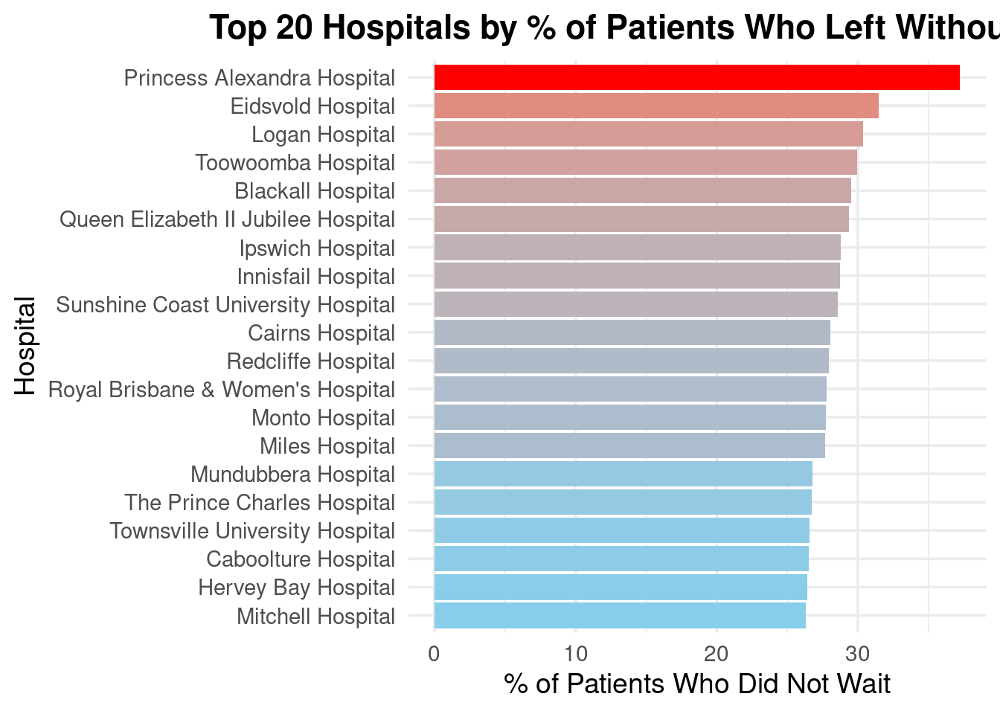
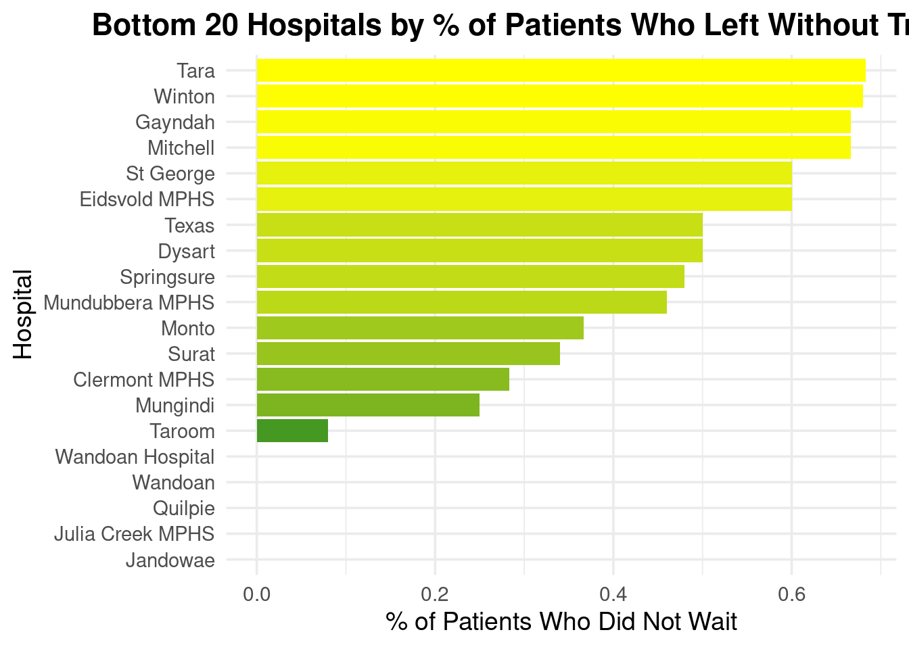
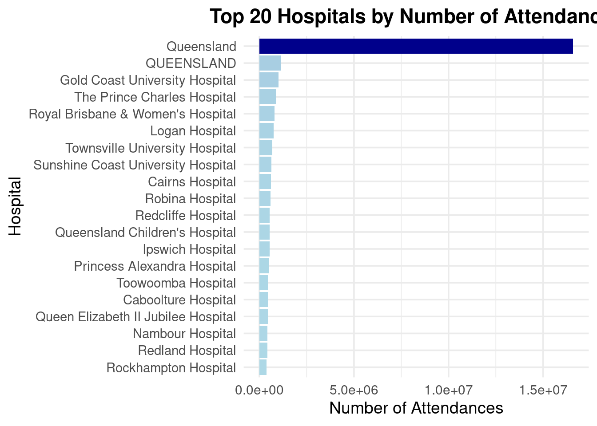
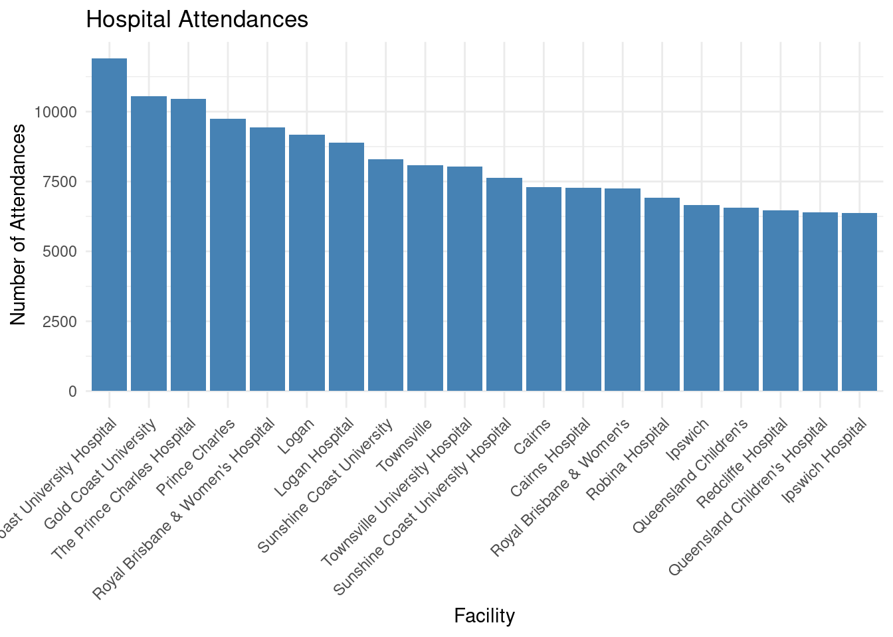

library("dplyr")
Attaching package: 'dplyr'The following objects are masked from 'package:stats':
filter, lagThe following objects are masked from 'package:base':
intersect, setdiff, setequal, unionlibrary("ggplot2")
library("plotly")
Attaching package: 'plotly'The following object is masked from 'package:ggplot2':
last_plotThe following object is masked from 'package:stats':
filterThe following object is masked from 'package:graphics':
layoutlibrary("tidyverse")── Attaching core tidyverse packages ──────────────────────── tidyverse 2.0.0 ──
✔ forcats 1.0.0 ✔ stringr 1.5.1
✔ lubridate 1.9.4 ✔ tibble 3.2.1
✔ purrr 1.0.4 ✔ tidyr 1.3.1
✔ readr 2.1.5 ── Conflicts ────────────────────────────────────────── tidyverse_conflicts() ──
✖ plotly::filter() masks dplyr::filter(), stats::filter()
✖ dplyr::lag() masks stats::lag()
ℹ Use the conflicted package (<http://conflicted.r-lib.org/>) to force all conflicts to become errorshospital_data <- read.csv('../../../../data/hospital_data.csv')
# Aggregate data per hospital (mean if multiple entries per hospital)
plot_data <- hospital_data %>%
group_by(Facility.HHS.Desc) %>%
summarise(avg_no_wait = mean(Patients.who.did.not.wait.for.treatment...., na.rm = TRUE)) %>%
arrange(desc(avg_no_wait)) %>%
slice_max(avg_no_wait, n = 20) # Top 20
# Create clearer horizontal barplot
ggplot(plot_data, aes(x = reorder(Facility.HHS.Desc,
avg_no_wait),
y = avg_no_wait,
fill = avg_no_wait)) +
geom_col(show.legend = FALSE) +
coord_flip() +
labs(
title = "Top 20 Hospitals by % of Patients Who Left Without Treatment",
x = "Hospital",
y = "% of Patients Who Did Not Wait"
) +
scale_fill_gradient(low = "skyblue", high = "red") +
theme_minimal(base_size = 14) +
theme(
plot.title = element_text(face = "bold", hjust = 0.5),
axis.text.y = element_text(size = 11)
)
# Calculate the average % of patients who did not wait per hospital
bottom_20_plot_data <- hospital_data %>%
group_by(Facility.HHS.Desc) %>%
summarise(avg_no_wait = mean(Patients.who.did.not.wait.for.treatment....,
na.rm = TRUE)) %>%
arrange(avg_no_wait) %>%
slice_min(avg_no_wait, n = 20) # Bottom 20 hospitals
# Plot: bottom 20 hospitals with the lowest no-wait percentage
ggplot(bottom_20_plot_data, aes(x = reorder(Facility.HHS.Desc, avg_no_wait), y = avg_no_wait, fill = avg_no_wait)) +
geom_col(show.legend = FALSE) +
coord_flip() +
labs(
title = "Bottom 20 Hospitals by % of Patients Who Left Without Treatment",
x = "Hospital",
y = "% of Patients Who Did Not Wait"
) +
scale_fill_gradient(low = "forestgreen", high = "yellow") +
theme_minimal(base_size = 14) +
theme(
plot.title = element_text(face = "bold", hjust = 0.5),
axis.text.y = element_text(size = 11))
# Summarize total attendances per hospital (in case of duplicates or multiple rows)
top_20_attendance <- hospital_data %>%
group_by(Facility.HHS.Desc) %>%
summarise(total_attendances = sum(Number.of.Attendances, na.rm = TRUE)) %>%
arrange(desc(total_attendances)) %>%
slice_max(total_attendances, n = 20)
# Plot the top 20 hospitals by attendance
ggplot(top_20_attendance, aes(x = reorder(Facility.HHS.Desc, total_attendances),
y = total_attendances,
fill = total_attendances)) +
geom_col(show.legend = FALSE) +
coord_flip() +
labs(
title = "Top 20 Hospitals by Number of Attendances",
x = "Hospital",
y = "Number of Attendances"
) +
scale_fill_gradient(low = "lightblue", high = "darkblue") +
theme_minimal(base_size = 14) +
theme(
plot.title = element_text(face = "bold", hjust = 0.5),
axis.text.y = element_text(size = 11)
)
# Filter for Triage 1, calculate average wait time, select top 20
hospital_data |>
filter(Triage.Category == "1") |>
group_by(Facility.HHS.Desc) |>
summarise(avg_wait = mean(Median.Waiting.time.to.treatment..minutes., na.rm = TRUE)) |>
arrange(desc(avg_wait)) |>
slice_max(avg_wait, n = 20) |>
ggplot(aes(x = reorder(Facility.HHS.Desc, avg_wait), y = avg_wait)) +
geom_col(fill = "darkred") +
geom_text(aes(label = round(avg_wait, 1)), hjust = -0.1, size = 3.5, color = "black") +
coord_flip() +
scale_y_continuous(limits = c(0, 120)) +
labs(
title = "Top 20 Hospitals by Average Wait Time (Triage 1)",
x = "Hospital",
y = "Average Waiting Time (Minutes)"
) +
theme_minimal(base_size = 14) +
theme(plot.title = element_text(face = "bold", hjust = 0.5),
axis.text.y = element_text(size = 11))
# Analyze data by center
Top_20 <- hospital_data%>%
filter(Facility.HHS.Desc!="Queensland", Facility.HHS.Desc!="QUEENSLAND")%>%
group_by(Facility.HHS.Desc)%>%
summarise(Number.of.Attendances = mean(Number.of.Attendances, na.rm=TRUE))%>%
arrange(desc(Number.of.Attendances))%>%
slice_max(Number.of.Attendances, n=20)
Top_20 <- arrange(Top_20, desc(Number.of.Attendances))
library(forcats)
#Visualize using ggplot
ggplot(Top_20, aes(x = fct_inorder(Facility.HHS.Desc), y = Number.of.Attendances)) +
geom_col(fill = "steelblue") +
labs(title = "Hospital Attendances",
x = "Facility",
y = "Number of Attendances") +
theme_minimal() +
theme(axis.text.x = element_text(angle = 45, hjust = 1))
# Step 1: Identify top 10 hospitals by total attendance
top_10_hospitals <- hospital_data |>
group_by(Facility.HHS.Desc) |>
summarise(total_attendance = sum(Number.of.Attendances, na.rm = TRUE), .groups = "drop") |>
arrange(desc(total_attendance)) |>
slice_max(total_attendance, n = 10)
# Step 2: Filter main dataset for only these top hospitals
top_data <- hospital_data |>
filter(Facility.HHS.Desc %in% top_10_hospitals$Facility.HHS.Desc)
# Step 3: Compute average waiting time for heatmap
heatmap_data <- top_data |>
group_by(Facility.HHS.Desc, Triage.Category) |>
summarise(Avg_Wait = mean(Median.Waiting.time.to.treatment..minutes., na.rm = TRUE), .groups = "drop")
# Step 4: Create heatmap
ggplot(heatmap_data, aes(x = Triage.Category, y = Facility.HHS.Desc, fill = Avg_Wait)) +
geom_tile(color = "white") +
scale_fill_gradient(
name = "Avg Wait (min)",
low = "lightyellow", # shortest waits
high = "darkred", # longest waits
na.value = "grey90"
) +
labs(
title = "Avg Waiting Time (Top 10 Hospitals by Attendance)",
x = "Triage Category",
y = "Hospital"
) +
theme_minimal(base_size = 12) +
theme(
axis.text.x = element_text(angle = 45, hjust = 1),
axis.text.y = element_text(size = 9),
plot.title = element_text(hjust = 0.5, face = "bold")
)
# Group and summarise
cor_data <- hospital_data |>
group_by(Facility.HHS.Desc) |>
summarise(
avg_wait = mean(Median.Waiting.time.to.treatment..minutes., na.rm = TRUE),
total_attendance = sum(Number.of.Attendances, na.rm = TRUE),
.groups = "drop"
)
# Pearson correlation
cor.test(cor_data$avg_wait, cor_data$total_attendance, method = "pearson")
Pearson's product-moment correlation
data: cor_data$avg_wait and cor_data$total_attendance
t = 1.528, df = 208, p-value = 0.128
alternative hypothesis: true correlation is not equal to 0
95 percent confidence interval:
-0.03046599 0.23736356
sample estimates:
cor
0.105359 # Create contingency table
wait_table <- table(hospital_data$Triage.Category, hospital_data$Patients.who.did.not.wait.for.treatment....)
# Chi-square test
chisq.test(wait_table)Warning in chisq.test(wait_table): Chi-squared approximation may be incorrect
Pearson's Chi-squared test
data: wait_table
X-squared = 20474, df = 16662, p-value < 2.2e-16hospital_data |>
group_by(Facility.HHS.Desc) |>
summarise(
mean_wait = mean(Median.Waiting.time.to.treatment..minutes., na.rm = TRUE),
sd_wait = sd(Median.Waiting.time.to.treatment..minutes., na.rm = TRUE),
iqr_wait = IQR(Median.Waiting.time.to.treatment..minutes., na.rm = TRUE),
.groups = "drop"
) |>
arrange(desc(mean_wait)) |>
slice_head(n = 10)# A tibble: 10 × 4
Facility.HHS.Desc mean_wait sd_wait iqr_wait
<chr> <dbl> <dbl> <dbl>
1 Caloundra Hospital 66.6 32.3 40.5
2 Roma Hospital 66.5 43.3 85.3
3 Cooktown Hospital 65.0 40.8 78.1
4 Thursday Island Hospital 65.0 45.5 93.7
5 Longreach Hospital 64.8 45.3 92.0
6 Bamaga Hospital 64.8 42.0 86.2
7 Doomadgee Hospital 64.7 43.5 89.1
8 Moranbah Hospital 64.6 46.0 94.6
9 Cherbourg Hospital 64.4 40.3 78.5
10 Charleville Hospital 64.2 47.9 100 # Simple linear model
lm_model <- lm(Median.Waiting.time.to.treatment..minutes. ~ Triage.Category + Number.of.Attendances, data = hospital_data)
summary(lm_model)
Call:
lm(formula = Median.Waiting.time.to.treatment..minutes. ~ Triage.Category +
Number.of.Attendances, data = hospital_data)
Residuals:
Min 1Q Median 3Q Max
-63.24 -49.29 17.57 38.75 47.62
Coefficients:
Estimate Std. Error t value Pr(>|t|)
(Intercept) 5.573e+01 1.112e+00 50.115 < 2e-16 ***
Triage.Category2 -3.334e+00 1.532e+00 -2.177 0.02952 *
Triage.Category3 -1.425e+00 1.532e+00 -0.930 0.35249
Triage.Category4 3.045e+00 1.531e+00 1.989 0.04677 *
Triage.Category5 7.514e+00 1.530e+00 4.910 9.24e-07 ***
Triage.CategoryAll -4.580e+01 4.223e+00 -10.844 < 2e-16 ***
Triage.CategoryALL 4.218e+00 1.566e+00 2.694 0.00708 **
Number.of.Attendances -2.778e-05 1.602e-05 -1.734 0.08295 .
---
Signif. codes: 0 '***' 0.001 '**' 0.01 '*' 0.05 '.' 0.1 ' ' 1
Residual standard error: 41.71 on 9266 degrees of freedom
(168 observations deleted due to missingness)
Multiple R-squared: 0.02211, Adjusted R-squared: 0.02137
F-statistic: 29.92 on 7 and 9266 DF, p-value: < 2.2e-16